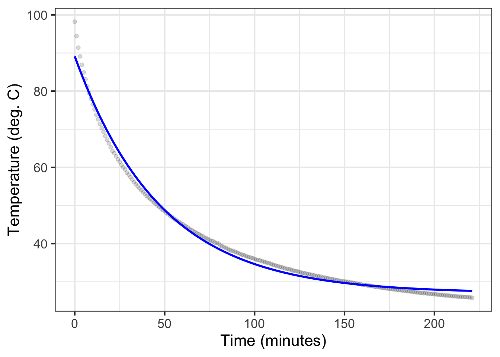

Block 2 is entitled “Modeling,” and for good reason. This Block has introduced techniques and concepts that provide essential tools for constructing models but do not require an understanding of the operations of Calculus. In the following Blocks, we will study additional techniques and concepts. That study requires us to do two things at once: introduce the concepts and methods of Calculus and show examples of how they apply to modeling.
Before continuing with more mathematics, it is helpful to put modeling in context. That context doesn’t come from the mathematics. Instead, it comes from science and, particularly, the scientific method.
One description of the scientific method, arising in the mid-20th century, is the hypothetico-deductive model. The process embedded in the hypothetical-deductive model consists of formulating a hypothesis to describe the world, deducing consequences from this hypothesis, and carrying out experiments to look for those consequences. If the consequences are experimentally observed, the experiment corroborates the hypothesis. If not, the experiment refutes the hypothesis. In the progess of science, refuted hypotheses are replaced with alternatives that are compatible with the assembled experimental data. And the cycle of experiment, corroboration or refutation, and hypothesis generation begins again.
A good analogy for the scientific method comes from detective books and movies. The heroes of the genre—Sherlock Holmes and Hercule Poirot are famously such—are playing the role of the modeler. The detectives’ methods include fingerprints, chemical detection of traces of poison, clever interrogation of suspects and witnesses, etc. These are analogous to the various methods we have and will be studying in this Book. In each detective story, the detective has a goal, often set by the client and identified at the beginning. Goals include identifying the criminal, forestalling a crime, recovering an object of value, and tracking down a missing person. Similarly, good modelers also know what is the objective of their work. Each individual case will have its distinct objective, but in general the objective is to help a person or an organization make a decision: what should be the parameters of a new design, how best to set the operating levels in production, what will be likely outcomes of a new policy, among others.
Once the objective has been identified, the scientific method is put to work. The detective collects whatever relevant information is readily available. Based on this information, the detective concocts one or more theories to make sense of the information. Such theories motivate the search for new information. Based on that information or a new development in the case, the theories are refined, discarded, or replaced. The new theories suggest what new data should be collected and how old information should be re-interpreted. This cycle continues. Theories are put to the test.
Every detective has access to a rich body of knowledge that provides analogies to the case at hand. In detective fiction, that knowledge often comes from experience with previous crimes, ploys and scams used by criminals, wills revised under duress, heiresses who lose their memory, and so on. The detective puts together a more or less plausible theory from these components.
Similarly, in large part, the ability to model comes from knowing about the kinds of techniques that other modelers have found useful. You have met some of these already: functions, low-order polynomials, quantities and their dimensions, ways for dealing with a wide range of magnitudes, setting parameters, etc. In the upcoming Blocks, you’ll learn new techniques that involve understanding relationships between information that comes in different forms. You’ll also learn important ways to extract conclusions from the models you construct.
This chapter shows, by example, some widely used modeling techniques. It also shows some automated methods, e.g., model polishing, that can improve a model. And, it’s important to consider potential pitfalls and commonly held modeling misconceptions that mislead modelers down perilous and pointless paths.
16.1 Example: Cooling water
Chapter 11 presented data on water cooling from near boiling to room temperature. (See Figure 11.2.) Prof. Stan Wagon of Macalester College collected the data with a purpose in mind: to see whether Newton’s Law of Cooling provides a good description of the actual physical process. In particular, Wagon knew that a simple application of Newton’s Law implies that the water temperature will decay exponentially.
Figure 16.1 shows an exponential function fitted to the water-cooling data.
Mod1_fun <- mosaic::fitModel(temp ~ A*exp(-k*time) + C, data = CoolingWater,start =list(C =30, k =1/20, A =70))gf_point(temp ~ time, data = CoolingWater, alpha = .15 ) |>slice_plot(Mod1_fun(time) ~ time, color ="blue") |>gf_labs(x ="Time (minutes)", y="Temperature (deg. C)")

Figure 16.1: An exponential model (blue) fitted to the CoolingWater data. \[\text{Model}_1 \equiv T(t) \equiv 27.0 + 62.1\ e^{-0.021 t}\]
At first glance, the Model\(_1()\) seems a good match to the data. But what do we mean by “good?” Is “good” good enough? And “good enough” for what? The experienced modeler should always have in mind the criterion by which to evaluate “good enough.” These criteria, in turn, are shaped by the purpose of building the model.
Beware of general-purpose criteria. For instance, a general-purpose criterion is to compare the shape of the function with the data. The exponential model slopes and curves in a similar manner to the data. The deviation of the model output from the data is, at worst, just a few degrees. This is small compared to the 50\(^\circ\)C change in temperature throughout the experiment.
Another widely used general-purpose statistical measure of the quality of the match is the R2 (R-squared) value. Mathematically, R2 is always between 0 and 1. (See Chapter 33, where the mathematics of R2 is introduced.) When R2 = 1, the match is perfect. For Model\(_1()\) and the cooling water data, R2 = 0.991. Many scientists would interpret this as “almost perfect,” although things are sometimes more complicated … as here.
Wagon’s purpose was not simply to see if an exponential curve resembles the data. Instead, he wanted to know if Newton’s Law of Cooling was consistent with the observed cooling over time. The exponential shape of temperature versus time is just one consequence of Newton’s Law. Another is that the water temperature should eventually reach equilibrium at room temperature.
The fitted exponential model fails here, as you can see by zooming in on the right tail of Figure 16.1. In Figure 16.2, we zoom in on the data’s left and right tails.
Early in the experiment.
Late in the experiment
Figure 16.2: The exponential model does not capture the water’s initial almost-boiling temperature. To judge from the \(A\) coefficient presented in the caption of Figure 16.1, the room temperature is 27\(^\circ\)C, while the data themselves indicate a room temperature a little less than 25\(^\circ\)C.
In the scientific method, one takes a theory (Newton’s Law of Cooling), makes predictions from that theory, and compares the predictions to observed data. If the predictions do not match the theory—here, that the water should cool to room temperature—then a creative process is called for, replacing or modifying the theory. The same applies when a mathematical model fails to suit its original purpose.
The creative process of constructing or modifying a theory is not primarily a matter of mathematics, it usually involves expert knowledge about the system being modeled. In the case of a cooling mug of water, the “expertise” can be drawn from everyday experience. For instance, everybody knows that it is not entirely a matter of the water cooling off; the mug gets hotter and then cools in its own fashion to room temperature.
Wagon’s initial modification of the theory went like this: Newton’s Law still applies, but with the water in contact with both the room and, more strongly, the mug. To build this model, he needed to draw on the mathematics of dynamical systems (to be introduced in Block 5), producing a new parameterized formula of water temperature versus time.
Wagon went on to check the water-mug-room theory against the data. He found that the improved model did not completely capture the temperature-versus-time data. He applied more expertise, that is, he considered something we all observe: water vapor (“steam”) rises from the water in the mug. This prompted some experimental work where a drop of oil was placed on the water surface to block the vapor. This experiment convinced him that a new revision to the model was called for that would include the cooling due to evaporation.
Without being able to anticipate the settings and purposes for your model building, we can’t pretend to teach you the real-world expertise you will need. But we can do something to help you move forward in your work. The remaining sections of this chapter introduce some general-purpose mathematical approaches to refining models. For instance, rather than using a single exponential function, Wagon used a linear combination of exponentials for his modeling. We will also try to warn you of potential pitfalls and ways you can mislead yourself.
16.2 Identifying systematic discrepancies
Refer to Figure 16.1, which shows the measured temperature data along with the initial fitted exponential model. The data systematically differ from the model in four places: the model underestimates the temperature early in the process, then overestimates for an interval, returns later to an underestimation, and finishes up with an overestimation.
When assessing a model, it is a good practice to calculate the difference between the observed data and the model value. Figure 16.3 shows this difference, calculated simply by subtracting from each data point the model value at the corresponding time. In statistical nomenclature, such differences are called the “residuals” from the model.
Figure 16.3: Residuals versus time for Model\(_1()\). The comparatively smooth structure indicates systematic deviations between the model and the data.
The presence of noise in any measurement is to be expected. You can see such noise in Figure 16.3 in the small, irregular, trembling fluctuations. Conversely, any smooth, slowly changing pattern in the residuals is considered systematic variation. Here, those smooth variations are much larger in amplitude than the irregular noise, indicating that we should investigate the systematic variation more closely.
This is a chance for the modeler to speculate on what might be causing the systematic deviations. A good place to start is with the largest residuals. In this case, that’s at the beginning of the temperature recording. Note that early in the recording, the recorded temperature falls much faster than in the model. This is perhaps clearer with reference to Figure 16.1.
What physical process might lead to the initial fast cooling of the water? Answering this question requires both detailed knowledge of how the system works and some creativity. As mentioned above, Wagon speculated that the water might be cooling in two ways: i) heat moving from the water to the air in the room and ii) heat moving from the water into the adjacent mug. This second process can be fast, making it a candidate for explaining the residuals in the early times of the experiment.
A quick test of the speculation is to construct a linear combination of two exponential processes, one fast and one slower. This would be difficult to do by eye using the techniques of Chapter 8, but fitModel() can accomplish the task so long as we can give a rough estimate of suitable numerical values for the parameters. Figure 16.4 shows the resulting function and the residuals.
Figure 16.4: The water-cooling model with two exponential processes, one fast and one slow, and the residuals from the observed data.
Figure 16.4 shows a much-improved match between the model and the data. The residuals are about one-tenth as large as those from the original model.
Depending on the purpose for which the modeling is being done, this might be the end of the story. The model is within a few tenths of a degree C from the data, good enough for purposes such as prediction. For Prof. Wagon, however, the purpose was to investigate how complete an explanation Newton’s Law of Cooling is for the physical process. He concluded that the residuals in Figure 16.4 still show systematic patterns.
16.3 Refine the data, refine the experimental technique
The initial model building often suggests how new, informative data might be collected. It’s impossible to generalize this to all situations, but in Prof. Wagon’s work, two possibilities arise:
Measure the temperature of the mug directly, as well as the temperature of the water.
Stifle other possible physical processes, such as evaporation of water from the top surface of the liquid, and collect new data
Prof. Wagon managed (2) by putting a small drop of oil on the water right after it was poured into the mug. This created a thin layer that hindered evaporation. He expected that canceling this non-Newtonian process would make the Newton model a better fit to the new data, providing an estimate of the magnitude of the evaporation effect.
16.4 Including new influences
In many situations, there is data on more than one factor that might come into play in determining the response variable. The mathematical methods relating to linear combinations covered in Block 3 provide the basic toolkit for considering such new influences. In Block 5, you will see many examples of situations where the system’s behavior depends critically on the interaction between two competing factors.
The closely related topic of statistical modeling provides essential concepts and tools for deciding whether to incorporate an additional input to a model function. Part of the importance of a statistical approach comes from a mathematical paradox that will be discussed in Block 4. Whenever you have a model of a response variable in terms of explanatory variables there will be residuals. Adding in a new response variable, even if it is utterly unrelated to the system, will make the residuals smaller. Statistical method provides the means to avoid mistakenly including the new response variable by comparing the actual reduction in residuals to what would be expected from a generic random variable.
Another important statistical topic is causality: reasoning about what causes what. Often, the modeler’s understanding of how the system under study works can guide the choice of additional variables to include in a model.
Space precludes detailed consideration of the statistical phenomena in this book, although the techniques used are well within the capabilities of anyone who has completed this book through Block 3.
It’s worth point out a regretable fact of life in the academic world covering the quantitative science. At almost all institutions (as of 2024), calculus is taught in a manner that is totally disconnected from statistics and data science. In part, this is because the professional training of mathematics instructors does not include an emphasis on statistics. This is an artifact of history and is slowly being addressed. MOSAIC Calculus is the result of a successful program to integrate modeling, statistics, calculus, and computing—the M S C of MoSaiC. To fit in with the academic structure at most universities, it was necessarily to deliver the integrated material in a form that could be slotted into existing Calculus curricula and, separately, into existing statistics curricula. The statistics part of the integrated curriculum is packaged into another free, online textbook: Lessons in Statistical Thinking.
16.5 Interpolation and extrapolation
Models are most reliable when the domain of the functions is considered to be the span of the data or observations underlying them. Evaluating a function inside the span of the data is called “interpolation.” Conversely, sometimes functions are evaluated at inputs far outside the span of the data used to construct the function. This is “extrapolation.”
Extrapolation is unreliable. However, sometimes, the purpose of a model is to help us consider how a system might behave when inputs are outside of the span of already-observed data. To satisfy such a purpose, extrapolation is unavoidable.
Still, it is possible to adopt mathematical methods that mitigate the impact of extrapolation. It’s key, for instance, to avoid high-order polynomials, as these produce some of the most extreme and misleading behavior. (See Chapter 27.) More reliable alternatives include using only low-order polynomials (as already described in Chapter 12), localized functions such as the sigmoid or gaussian, or splines (Chapter 49).
Example: Extrapolating gravitation
Isaac Newton famously developed his universal theory of gravitation by examining the orbits of planets. Planets close to the sun feel a strong tug of the Sun’s gravity, and farther-out planets have receive a weaker tug. Similarly, the motion of satellites around the Earth is determined mainly by the Earth’s gravitational pull. Per Newton’s theory, the acceleration due to gravity goes as the inverse-square of distance from the center of the Earth. Far-away satellites have long orbits, close-in satellites orbit with far lower orbital duration.
Planets orbit outside the Sun. Satellites orbit outside the Earth. Application of the inverse-square law to forces outside the Sun or outside the Earth are interpolation. But there are no observations of orbits or forces inside the Sun or Earth. So using the inverse-square law for inside forces is an extrapolation. This extrapolation produces catastrophically misleading models. In reality, the gravitational force on the inside—as you might imagine in a tunnel going through the center of the Earth—increases linearly with distance from the center. (Newton’s theory explains the mechanics of this.)
16.6 Mechanism versus curve
It is important to distinguish between two basic types of model:
Empirical models which are rooted in observation and data.
Mechanistic models such as those created by applying fundamental laws of physics, chemistry, etc.
We will put off mechanistic models for a while, for two reasons. First, the “fundamental laws of physics, chemistry, and such” are often expressed with the concepts and methods of calculus. We are heading there, but at this point you don’t yet know the core concepts and methods of calculus. Second, most students don’t make a careful study of the “fundamental laws of physics, chemistry, and such” until after they have studied calculus. So examples of mechanistic models will be a bit hollow at this point.
Empirical models (sometimes deprecatingly called “curve fitting”) are common in many vital areas such as the social sciences and economics, psychology, clinical medicine, etc. A solid understanding of statistics greatly enhances the reliability of conclusions drawn from empirical models.
In addition to physical law, geometry provides many examples of mechanistic connections between elements. An example is the geometric calculation of the forward force on an arrow being pulled back by a bow’s draw.
16.7 Polishing parameters
Section 11.6 refers to a way to improve parameters in order to better match patterns in data: polishing. Polishing can be carried out by software such as fitModel(). It is usually worthwhile simply because it is a low-cost task: it is easy and mostly automatic.
Polishing becomes harmful when the modeler misinterprets it as increasing a model’s reliability. Polishing can add a digit or two to a model parameter. Still, those digits may be irrelevant from a statistical perspective and do not provide any warranty that the fitted function is an appropriate approximation to the real-world situation.
An analogy might help. Polishing your teeth might make you marginally more attractive, and can be part of good hygiene, but it will not make you a better person.
Application area 16.1 We look at attemps in the 1970s to predict when oil production and consumption will reach its peak.
Nowadays, everybody knows about the problems with oil consumption and climate change; bringing world oil consumption down to zero by 2050 is an often-stated goal of countries throughout the world. The basic theory of climate change is that increased CO\(_2\)_ from the consumption of fossil fuels causes warming via the greenhouse effect. (There are other greenhouse gasses as well such as methane.) The CO\(_2\)_ greenhouse phenomenon was first modeled by Svante Arrhenius in 1896. His model indicated that if atmospheric CO\(_2\)_ doubled, global temperature would rise by 5-6\(^\circ\)C. As of today, atmospheric CO\(_2\)_ has increased by 50% from historic levels at the start of the industrial revolution. A simple linear interpolation of Arrhenius’ prediction would put global temperature increase at about 2.5\(^\circ\)C. This is eerily close to the present-day target of an increase by 2 degrees.
Despite Arrhenius’s prescience, widespread understanding of greenhouse gas effects emerged only around 1990. Up until then, the possibility of concern was that the world might run out of oil and freeze the economy. Policy makers attempted to use past data to predict future oil. These were entirely empirical models: curve fitting. The curve selected was sensible: a sigmoidal function. The exhaustion of oil corresponds to reaching the sigmoid’s upper horizontal asymptote is reach.
Figure 16.5 shows cumulative oil consumption globally. The value for each year corresponds to all consumption from 1900 up to the given year. It’s revealing to look at a fitted curve using data up to 1973. (In 1973, the world’s oil economy started to change rapidly due to embargoes and oligopolistic behavior by leading oil producers.) The blue curve in Figure 16.5 shows a sigmoidal function as might have been fitted in 1973.
Figure 16.5: The total cumulative amount of oil produced (units: Terra-watt-hours) globally for each year since 1900. Blue: a sigmoidal model fitted to the data up to 1973. Green: sigmoidal model fitted with data through 2023.
Such curve fitting is a fool’s errand for several reasons. Although it might be sensible to imagine cumulative oil production over time as a sigmoid, there is no indication in the data that the curve is leveling off. Nor is there good reason to assume that the mechanisms that shaped the oil economy of 1920 were still in action in 1973, let alone in 2023. Not only is the model an extrapolation, but it depends on the details of polishing of sigmoidal parameters. To illustrate this sensitivity, consider the green curve in Figure 16.5 which is fitted to the data through 2023. The observed data in 2023 is only about one-third the level of the 1973 prediction for 2023.
Now consider a different purpose for such modeling. Suppose we take at face value international claims of a “net-zero” CO\(_2\) economy by 2050 and we want to anticipate the total cumulative effect as of that time. Draw a smooth curve continuing the oil consumption data up through 2100, with a leveling off around 2050. There is no precise way to do this, since there is no reason to think that the growth part of the sigmoidal curve will be the same as the leveling-off part. There is a range of plausible scenarios, but since we are already close or even at the target of a 1.5 degree increase in global temperature, it seems entirely possible that the horizontal asymptote will be above 2 or even 2.5 degrees.
Fortunately, unlike in 1973, there are now detailed mechanistic climate models relating CO\(_2\) to global temperatures. We will have to pay careful attention to their predictions as we head toward the goal of net-zero emissions.